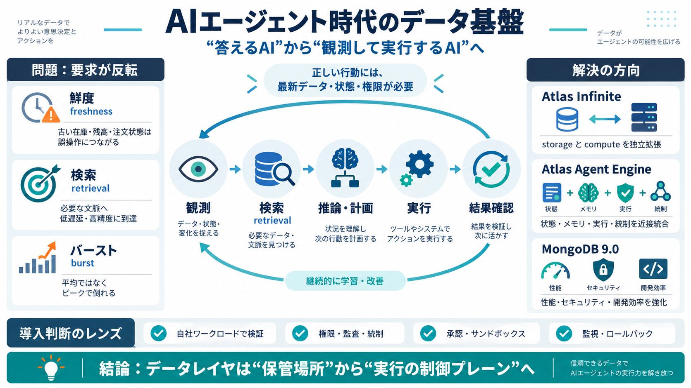

MongoDB launches Atlas Agent Engine, Atlas Infinite as MongoDB 9.0 goes GA | Constellation Research
The core powering Atlas Agent Engine and Atlas Infinite is MongoDB 9.0, which has 20% higher transaction throughput and …

データ基盤の再設計
生成して答えるAIから、観測して実行するエージェントへ。必要になるデータ要件（鮮度・検索・状態・統制）が、運用データ層の設計を変える。
答え→操作
従来は「情報を渡して回答」すれば足りることが多い。エージェントは「正しい行動」を求めるため、参照データと検索・状態・権限が性能と同じくらい重要になる。
古いほど危険
モデルが論理的に正しくても、在庫・口座残高・注文ステータスが古いと誤った意思決定や誤操作につながる。定期同期だけでは安全性を担保しにくい。
検索が鍵
ループが長く自律性が高いほど、必要情報へ素早く到達できるかが致命的になる。検索精度とデータへの到達速度が、行動の正しさを左右する。
見積もり不能
エージェントは1リクエストあたり複数の操作（計画・検索・ツール呼び出し・読み書き・推論）を引き起こし得る。平均ではなく“ピーク”で倒れるため、計算・ストレージの伸縮が重要になる。
分離して伸ばす
Atlas Infiniteは、ストレージとcomputeを独立して拡張できるデプロイ選択肢。バースト時の需要変動に合わせ、止まりにくさとコスト効率を狙う。
近接統合
エージェントはステートフル（状態保持）で、メモリ・検索・実行・権限/ポリシーが必要。複数コンポーネントに分散すると統合点・境界・複製が増え運用が難しくなるため、近い場所でまとめる。
基盤の性能
性能・セキュリティ・開発効率を高め、AIエージェントのデータレイヤ要件に寄せる。記事では性能指標や暗号化、プライベートネットワーク等にも触れている。
何を確認する
方向性は重要だが、企業導入では再現性・統合・検証が要る。ベンチマーク条件、課金、セキュリティ/統制、移行、運用時の失敗モードの確認が必須。
ガードレール
エージェントは誤りを増幅し得るため、性能より“ガードレール”が重要。記事は方向性を示す一方、承認・サンドボックス・ロールバック・ポリシー不整合時の挙動などは追加で確認が必要。
結論
エージェント化で、データ基盤は“保管”から“実行の土台”へ移る。鮮度・検索・状態・統制・バースト吸収を同一の流れで設計する視点が、この記事の要点。
The core powering Atlas Agent Engine and Atlas Infinite is MongoDB 9.0, which has 20% higher transaction throughput and …
NEW YORK, Sept. 29, 2026 /PRNewswire/ -- MongoDB, Inc. (NASDAQ: MDB) today announced MongoDB 9.0, the best version of Mo…
NEW YORK, September 29, 2026—MongoDB, Inc. (NASDAQ: MDB) today announced MongoDB 9.0, the best version of MongoDB ever b…
Internal tests using MongoDB 9.0 show Atlas Infinite provides 189% more throughput per dollar than Atlas Core. Customer …
Atlas Infinite is a MongoDB Atlasedition, built on an architecture that separates compute from storage into independent …